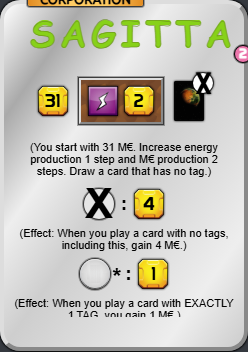
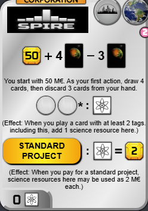
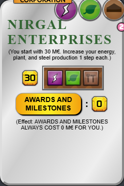
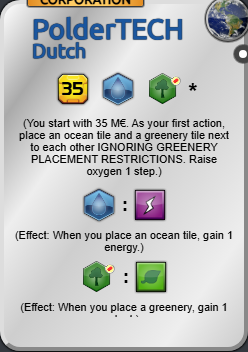
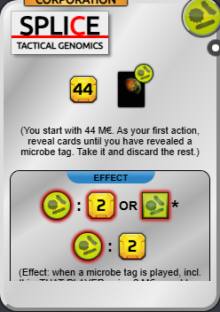
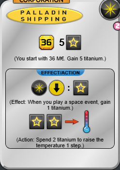
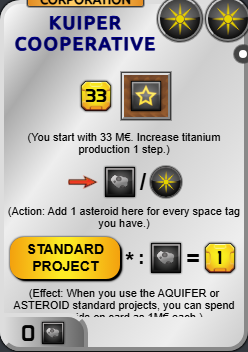

S
3

100

95

90
A
5

89

87

84

82

80
B
9

79

78

77

74

74

73

72

70

70
C
17

69

68

67

66

64

64

63

63

61

60

58

58

58

58

57

55

55
D
14

54

53

52

52

52

50

48

48

46

45

42

41

35

35